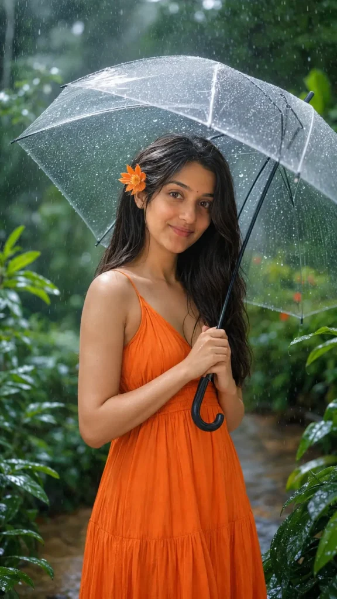

Rain changes everything about a photo, from the color of the sky to the way light bounces off a wet road. That is exactly why a well-written monsoon photo chatgpt prompt can turn an ordinary selfie into something that looks like a film still. Over the past few monsoon seasons, more creators have moved away from generic filters and started asking ChatGPT and other AI tools to generate rain-themed edits with real depth and mood.
This article walks through the exact prompt structures that produce believable rainy photo edits, explains why this trend has grown so fast, and covers the Jai Bhim AI photo editing style that many users search for during the rainy months. By the end, you will have templates you can copy, tweak, and use right away.
Want more awesome prompts?
Join our community and get the latest viral prompts daily.
Follow on Instagram


What Is a Monsoon Photo ChatGPT Prompt
A monsoon photo prompt is a written instruction that tells an AI image tool how to transform a photo so it looks like it was taken during rainfall. It usually includes details about the sky, the ground, the light source, and small realistic touches like water droplets.
Core Elements of a Good Rain Prompt
Every strong prompt in this category tends to include three things: a weather description, a lighting cue, and a texture detail. Skipping any one of these usually results in a flat, unrealistic edit.
- Weather description, such as “light drizzle” or “heavy downpour”
- Lighting cue, such as “soft grey overcast light” or “dim evening tone”
- Texture detail, such as “wet pavement reflections” or “raindrops on the camera lens”
Why Rainy Aesthetic Edits Are Trending Right Now
Monsoon content performs well every year because the season itself creates natural visual interest that people want to capture, even when the actual weather outside is not photogenic. Cloudy skies, indoor lighting, and rushed schedules mean many people cannot get the shot they want in real life, so they turn to AI editing instead.
There is also a seasonal pattern here worth noting. Search interest for rain edit prompts and monsoon photo styles rises sharply every year between June and September, matching the actual monsoon calendar across most of India. Creators who post early in the season, before the trend peaks, usually see stronger engagement than those who post later.
Best Monsoon Photo ChatGPT Prompt Templates
These templates are written to be copied directly into ChatGPT or any compatible AI image tool. Replace the bracketed section with your own detail.
Template One: Moody Street Portrait
“Edit this photo to look like it was taken during a monsoon evening. Add soft grey overcast lighting, wet street reflections in the background, and light rain streaks in the air. Keep the subject’s face sharp and natural, with [clothing or mood detail] visible.”
Template Two: Window Rain Aesthetic
“Transform this photo into a cozy rainy-day scene shot near a window. Add fogged glass, blurred rain droplets on the pane, and warm indoor light contrasting against the cool blue tone outside.”
Template Three: Umbrella Candid Shot
“Recreate this image as a candid monsoon photo with the subject holding an umbrella. Add falling rain, splashes near the feet, and a muted color palette with one warm accent color, like a red umbrella or yellow raincoat.”
How to Write Your Own Rain Edit Prompt
Once you understand the pattern, writing your own monsoon photo edit prompt becomes simple. Start with the scene, add the weather, then add one texture detail that sells the realism.
Step-by-Step Prompt Building
- Describe the base scene in one sentence.
- Add a specific rain intensity, from light drizzle to heavy downpour.
- Mention a light source, such as streetlights, a cloudy sky, or window light.
- Include one texture detail like droplets, puddles, or fog.
- Ask the tool to keep the subject’s face natural and unaltered.
- Mention a color mood, such as cool blue tones or warm amber tones.
Following this order consistently gives far more predictable results than writing one long, unstructured sentence.
Jai Bhim AI Photo Editing Style
During the monsoon months, another photo trend often overlaps with rain edits: the Jai Bhim AI photo editing style, associated with tributes and social posts around Dr. B.R. Ambedkar. Many users combine a rainy or overcast background with a respectful portrait edit and a Jai Bhim greeting overlay, often shared around community events and observances that fall within this season.
Writing a Respectful Jai Bhim Prompt
When creating this style, keep the prompt focused on dignity and clarity rather than heavy filters. A simple structure works best: “Edit this photo with a soft, respectful portrait tone, clean background, and subtle blue-sky or monsoon cloud backdrop. Keep the expression natural and avoid excessive stylization.” This keeps the final image suitable for sharing across Instagram, Telegram, and WhatsApp channels without looking overedited.
Monsoon Photo Prompt vs Regular Portrait Prompt
A common question is whether a monsoon prompt really needs to differ much from a standard portrait prompt. It does, and the difference comes down to three factors: color temperature, background detail, and light softness.
A regular portrait prompt usually asks for balanced, even lighting and a clean background. A monsoon prompt instead asks for cooler tones, visible weather elements, and softer, diffused light, since direct sunlight rarely appears in real rain photos. Using a regular portrait prompt during monsoon-themed content usually produces an image that looks sunny and out of place, even if the subject and pose are correct.
Common Mistakes to Avoid
Many first-time users get inconsistent results because of small prompt errors rather than the AI tool itself.
- Asking for “rain” without specifying intensity, which often produces unrealistic heavy storms
- Forgetting to mention lighting, which leaves the subject looking flatly lit against a dramatic sky
- Overloading the prompt with too many effects at once, which confuses the output
- Skipping a request to preserve facial detail, which can distort the subject’s face
Frequently Asked Questions
What is the best monsoon photo chatgpt prompt for Instagram?
A prompt combining soft overcast light, wet street reflections, and one warm accent color tends to perform best for Instagram, since it balances mood with clarity. Keep the description under three sentences for the most consistent results.
How do I make a rain edit look realistic instead of fake?
Realism comes from texture details like droplets on a lens or puddle reflections, combined with muted rather than oversaturated colors. Avoid asking for heavy rain and dramatic lighting in the same prompt, as this often looks artificial.
Can ChatGPT generate rain effects directly on my photo?
Yes, when connected to an image generation tool, ChatGPT can apply rain effects, fog, and mood lighting based on a written description. Results vary by tool version, so testing two or three prompt variations usually gives the best output.
Is monsoon photo editing only useful during the rainy season?
No, many creators prepare rain-themed content in advance or use it for creative portfolios year-round. It is simply most popular and most searched during the actual monsoon months.
Which is better, a short prompt or a detailed prompt for rain edits?
A detailed prompt with four to six specific elements consistently outperforms a short, vague one. Short prompts like “add rain” often produce generic or unrealistic results.
Does adding an umbrella or raincoat improve the edit?
Yes, a single recognizable object like an umbrella gives the AI tool a clear focal point and often makes the scene feel more authentic. Avoid adding more than one or two props, since a cluttered scene can look staged.
What is the Jai Bhim AI photo editing trend?
It refers to AI-edited portraits, often shared with a Jai Bhim greeting, that use a clean and respectful style rather than heavy filters. The trend frequently overlaps with monsoon-season posting since the season aligns with several community observances.
How often should I change my rain edit prompt style?
Refreshing your prompt wording every few weeks helps keep content from looking repetitive, especially if you post regularly. Small changes, like switching from window light to street light, are usually enough to keep results feeling fresh.
Conclusion
A strong monsoon photo chatgpt prompt comes down to three details: weather intensity, light source, and one realistic texture element. Whether you are creating a moody street portrait, a cozy window scene, or a respectful Jai Bhim style edit, the same structured approach applies every time. Start with the templates above, adjust the details to match your own photo, and test a few variations before you settle on your final post.